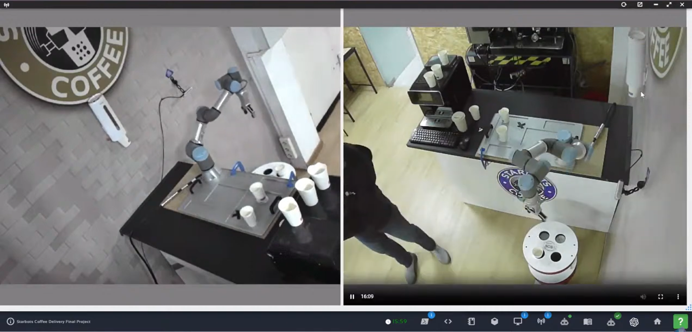

نظرة عامة على المشروع
كان هذا هو المشروع النهائي لماستر كلاس الروبوتات من The Construct، وقد صُمم لمعالجة تحدٍ حقيقي في الأتمتة: إنشاء نظام آلي بالكامل لتوصيل القهوة. دمج المشروع عدة مجالات من الروبوتات والذكاء الاصطناعي لبناء نظام متكامل تستطيع فيه الذراع الروبوتية التعرف بصرياً على فتحة التسليم المحددة، ثم التقاط كوب القهوة ووضعه بدقة وثبات دون انسكاب.
يوضح النظام التطبيق العملي للرؤية الحاسوبية وتخطيط الحركة والمناولة الروبوتية، عبر دمج الإدراك والتخطيط والتحكم لتحقيق مهمة آلية معقدة.
دوري
كنت مسؤولاً عن دورة التطوير كاملة، من معمارية النظام وتصميمه إلى التنفيذ والنشر. وشمل ذلك:
- تصميم معمارية النظام الكاملة التي تدمج الرؤية والتخطيط والتحكم
- تدريب ونشر نموذج الإدراك YOLOv8 لاكتشاف الأجسام في الوقت الحقيقي
- تنفيذ تخطيط الحركة باستخدام إطار MoveIt!
- تطوير عقد ROS مخصصة لتنسيق سير العمل بالكامل
- برمجة والتحكم في الذراع الروبوتية UR3e للتنفيذ الدقيق
الميزات الرئيسية والتنفيذ التقني
الإدراك اللحظي باستخدام YOLOv8
قمت بتدريب نموذج رؤية حاسوبية YOLOv8 لاكتشاف فتحة التسليم المحددة الخاصة بوضع الكوب في الوقت الحقيقي. يحدد النظام الإحداثيات ثلاثية الأبعاد للهدف من تدفق الكاميرا بدقة، مما يمنح الذراع الروبوتية وعياً مكانياً دقيقاً.
تخطيط حركة دقيق باستخدام MoveIt!
تم تنفيذ إطار MoveIt! للتعامل مع جميع مهام تخطيط الحركة. أتاح ذلك توليد مسارات Cartesian سلسة وخالية من التصادم، مما ضمن انتقال ذراع UR3e بدقة وأمان من موضع الالتقاط إلى موضع الوضع دون انسكاب القهوة.
تكامل كامل مع ROS
تم تنسيق النظام بالكامل باستخدام ROS. وتم تطوير عقد مخصصة للاشتراك في مواضيع الإدراك الخاصة بـ YOLOv8، ومعالجة الإحداثيات ثلاثية الأبعاد، وإرسال الأهداف إلى مخطط MoveIt!، ثم تنفيذ المسار المخطط على الذراع الروبوتية UR3e الفعلية.
أتمتة كاملة من البداية للنهاية
تم تحقيق تشغيل ذاتي بالكامل من مرحلة الإدراك إلى التنفيذ. يكتشف النظام الهدف، ويخطط الحركة، ويلتقط كوب القهوة، ويتجه إلى فتحة التسليم، ثم يضعه بدقة كاملة — وكل ذلك دون تدخل بشري.
التقنيات المستخدمة
عرض المشروع

ذراع روبوتية UR3e مع نظام رؤية YOLOv8 لوضع أكواب القهوة بشكل ذاتي
الأثر ومخرجات التعلم
نجح هذا المشروع النهائي في إثبات التكامل بين مفاهيم روبوتية متقدمة تشمل الرؤية الحاسوبية وتخطيط الحركة والمناولة الروبوتية. كما أظهر التطبيق العملي للذكاء الاصطناعي والروبوتات في حل تحديات أتمتة واقعية، مؤكداً المهارات التي تم اكتسابها خلال ماستر كلاس الروبوتات.